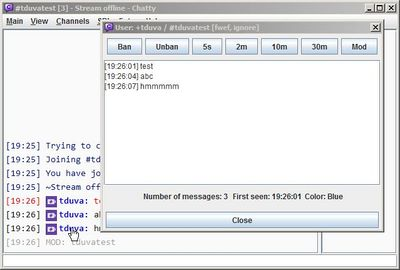

This is a short guide to help you with installing Chatty and getting familiar with some of it's features.
You can download Chatty from it's Website.
The download simply consists of a .zip-file which you should
extract wherever you want to have Chatty. The extracted files include a
Chatty.jar which you should usually be able to double-click to
start the program (if Java is installed properly). (See the help
if Chatty won't start.)
If you already have an older version of Chatty and want to update, then
just replace all the files with the new ones in the .zip.
Basicially just unzip the .zip into the same folder and overwrite
all files if asked (unless you have some custom icons or sounds that have the same name).
You can also unzip it into a new folder (just make sure you don't use the old version anymore).
Your settings are saved seperately in the settings directory
and are not lost when you upgrade to a new version. The new version should normally
automatically use the same settings without you needing to change anything.
If you are interested in what your settings directory is,
enter /openDir in Chatty. There is also a backup
folder in there with backups of the settings.
Please check out the Release Information for any changes in a new version that may require your attention.
Note: If you downgrade to an older version of Chatty, some settings (that the older version didn't have yet) may be lost. So make sure you don't run old versions of Chatty without knowing what you are doing, if you have changed settings unique to newer versions.
If you are starting Chatty for the first time, you will have to request login data from Twitch so Chatty can connect to chat for you and do other stuff like show live streams you follow.
In the Connect-dialog, click on Create login..
and then Request login data and simply follow the instructions.
Once you successfully created the login, close the dialog until you get back
to the Connect-dialog. (There is a Guide on what to do
when getting login data fails.)
In the Connect-dialog enter the name of the channel you want
to join in the Channel: input box. The name of the channel
is the same as the name of the stream. You can enter more than one channel
name to join by seperating them with a comma. To connect simply press Enter
or click on Connect. After connecting, it will automatically join
the channels you specified.
Even after connecting you can join additional channels via Channels - Join Channel
or entering the command /join <channelname> in the inputbox
(e.g. /join joshimuz).
You can leave channels by right-clicking anywhere in the channel and
selecting Close Channel from the context menu or right-clicking
on the channel's tab (only available if there is more than one channel) and
selecting Close from the context menu.
Chatting is pretty straightfoward as you would expect from any chat program, however the inputbox has a few useful features. Enter the beginning of a name in chat and press TAB to auto-complete the name. Press Up-Arrow key to go back to previous stuff you entered.
To moderate a chat, you can of course use the regular moderations commands
like /ban, /timeout and so on, but a much more
convenient method is to click on the name of a user you want to ban/timeout,
which opens the User-dialog, containing several moderation
buttons as well as the recent messages of that user, so you can quickly check
if you are actually timing out the correct user.
Also check out the options to pause chat and timing out users via shortcuts only.

Chatty regulary requests information about the current stream, which is
displayed in the titlebar and the Channel Info-dialog.
You can open the Channel Info via the View-menu
or the channel context menu (right-click anywhere on the channel). The
Channel Info contains the current title/game but also a history
of the Viewercount and previous title/games (if you hover over points).

Open the Live Channels-window via Channels - Live Channels
to open up a list of streams you follow that are currently live or streams
whose channel you have currently joined that are currently live.
(You need to have the required access with your login data to see streams you follow.)
You can enable/disable showing streams you follow in the Settings - Notifications.
There you can also configure what kind of Tray Notification you want to have
pop up for stream status changes or highlighted messages.
To join channels directly out of the Live Channels-dialog
right-click on a stream to open the context menu and then select Join channel
to join the channel for that stream and if you want also open the stream in
your browser or Livestreamer.
Settings
from the Main-menu to get all kinds of settings to adjust
Chatty to your preference. Please make use of the Help link
in the bottom left corner of the Settings-dialog to get
help on the current page of settings you have selected.